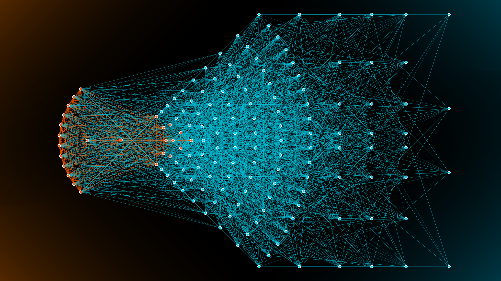

Presentation
Machine learning
About machine learning
Machine learning is a subfield of artificial intelligence that uses algorithms to analyze data and make predictions or decisions based on that data.
Applications of Machine Learning
Machine vision

Applications of Machine Learning
Natural Language Processing
ASR (Automated speech recognition)

Applications of Machine Learning
Science and Research
Healthcare
Cyber Security
Civil and Military Robotics
Advertising and Marketing, Finances
AI in Education
AI in Home
etc ...
The Machine Learning Process
Get data from various data source.
Collect and prepare the data for training.
Train the machine learning model on the prepared data.
Evaluate and fine-tune the model to improve its performance.
Deploy and data visualization.
Machine Learning Types
Unsupervised Machine Learning, Supervised Machine Learning, Reinforcement Learning
Machine Learning Types
Unsupervised learning
Unsupervised learning is a machine learning method where the algorithm learns to find patterns or relationships in data without having explicit labels or supervision.
Machine Learning Types
Supervised learning
Supervised learning is a type of machine learning where the model is trained using labeled data to make predictions or classify new data based on previously learned patterns.
Machine Learning Types
Reinforcement learning
Reinforcement learning is a type of machine learning where an agent learns to make decisions by continuously performing actions, receiving rewards or penalties, and adapting its behavior accordingly.
Machine Learning Types
Semi-supervised learning
Semi-supervised learning is a machine learning approach that combines the use of labeled and unlabeled data to train a model.
Artificial Neural Networks
Artificial Neural Networks (ANN) is a machine learning technique that is modeled after the structure and function of the human brain, used to recognize patterns and make predictions based on input data.
Machine Learning Methods
Clustering
Clustering is a type of machine learning that groups similar data points into clusters based on their characteristics.

Dimension reduction
Dimensionality reduction is a technique used in machine learning to reduce the number of features or dimensions in a dataset while retaining important information for modeling purposes.
Classification
Classification machine learning is a process of categorizing data into classes based on their features and characteristics.

Regression
Regression machine learning is a method that predicts numerical values based on input data.
Machine learning is a field of computer science that allows computers to improve their performance on a specific task through experience and pattern recognition.
The End
Rolling Scopes School 2023
Grif-Rift-BY github